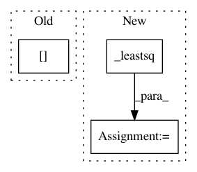

3202b9db141e612f93a05cbee39624e18f30994a,dipy/reconst/ivim.py,IvimModel,fit,#IvimModel#Any#Any#,257
Before Change
x0, bounds_check[0])
x0 = np.where(x0 < bounds_check[1],
x0, bounds_check[1])
params_in_mask = self._leastsq(data, x0)
return IvimFit(self, params_in_mask)
After Change
x0 = np.array([S0, f, D_star, D])
// Fit parameters again with scaling
params_with_scaling = self._leastsq(data, x0, scaling=self.scaling)
// Fit parameters without scaling
params_no_scaling = self._leastsq(data, x0)
params_in_mask = np.where(params_no_scaling[1] <= .5, params_no_scaling, params_with_scaling)
return IvimFit(self, params_in_mask)
def estimate_S0_prime_D(self, data):
Estimate S0_prime and D for bvals > split_b_D
In pattern: SUPERPATTERN
Frequency: 3
Non-data size: 3
Instances
Project Name: nipy/dipy
Commit Name: 3202b9db141e612f93a05cbee39624e18f30994a
Time: 2016-08-18
Author: shahnawaz.ahmed95@gmail.com
File Name: dipy/reconst/ivim.py
Class Name: IvimModel
Method Name: fit
Project Name: nipy/dipy
Commit Name: da39858bf9000c97527264eff5fe7c16e2edbdc3
Time: 2016-08-12
Author: shahnawaz.ahmed95@gmail.com
File Name: dipy/reconst/ivim.py
Class Name: IvimModel
Method Name: estimate_D_star
Project Name: nipy/dipy
Commit Name: 7885c7f254146ca7a78a6a0b50165e1f12ad529a
Time: 2016-06-24
Author: shahnawaz.ahmed95@gmail.com
File Name: dipy/reconst/ivim.py
Class Name:
Method Name: two_stage